圖解 04｜敏捷：跑得快，為甚麼還是慢半拍？
📌 重點摘要卡
- 一句話核心： 敏捷 = 知覺決策 + 變向速度，兩者要分開練、分開測。
- 關鍵數據： 測驗 CV ≈ 1.6%、ICC ≈ .90｜真進步門檻 2–3%｜簡單反應時間約 0.2 秒
- 因果流程：
看對手動作（線索）➔預判＋選擇（決策）➔啟動與變向（動作） - 跨域應用： 羽球訓練：步法測驗外，加入看對手的反應測驗。數據模型：測量誤差（CV）決定可偵測的最小變化。IT 教學：感測器量反應時間（ESP32＋按鈕＋LED）。
❓ 先想一想
一名選手的步法測驗是全隊最快，比賽卻常常「來不及」。問題可能不在腳，而在眼睛和判斷。
🎬 動畫：敏捷 = 會判斷 + 跑得到

📊 數據一覽
| 研究 | 練了甚麼 | 結果 | 證據 |
|---|---|---|---|
| 廖宜亮 2022（24 名青少年，隨機） | 6 週敏捷訓練 | 步法、T 測驗進步；60 m 衝刺沒有 | 🟡 |
| Guo & Xu 2025（48 名） | 平衡＋增強式 | 部分變向測驗優於只做增強式 | 🟢 |
| Malwanage 2022（20 名 13 歲） | 平衡訓練 | 場上步法啟動時間改善 | 🟡 |
| Fernández-Fernández 2022 | 場上變向測驗 | 可靠：ICC ≈ .90、CV ≈ 1.6% | 🔵 |
一句話：練甚麼就進步甚麼（訓練特異性）。練步法不一定讓直線衝刺變快。
🧭 三層敏捷評估
flowchart LR
L1["① 直線速度<br/>短距衝刺"] --> L2["② 預定路線變向<br/>場上步法測驗"] --> L3["③ 看到再反應<br/>看燈／看對手"]大部分研究只測到 ①②；比賽真正決勝的是 ③。
🧠 延伸知識
📝 反應時間有下限
一般人對單一燈號的簡單反應時間約 0.2 秒。選項越多，反應越慢（希克定律 Hick's law）。羽球來球有多個可能落點，所以頂尖選手不只是「反應快」，而是在對手擊球之前就從身體和拍面讀出線索（預判）。
📝 為甚麼「看燈」不等於「看對手」？
反應燈訓練練的是「看到訊號就動」；比賽需要的是「從對手動作讀出落點」。兩者的視覺線索不同，所以練反應燈不一定轉移到球場。想練預判，可用真人餵球或對手影片（見 第 11 章）。
💡 測驗小規則
同一時段、同一場地、同一熱身，每 6–8 週測一次；成績改變超過 2–3% 才算真進步。
✅ 30 秒自我測驗
❓ 1. 10 秒的測驗，快了 0.1 秒算不算進步？
不一定：只快 1%，在測驗誤差範圍內。快 0.3 秒（3%）才較可信。
❓ 2. 敏捷的兩個成分是甚麼？
知覺與決策（判斷）＋變向速度（跑得到）。
❓ 3. 為甚麼練了 6 週步法，60 m 衝刺卻沒進步？
訓練特異性：練的是變向和步法，不是直線加速。